CatDex — export screenshots
15 écrans · largeur 390px · hauteur complète (full page) @2x · 2026-08-05T23:49:37.410Z
01-welcome — Welcome
/welcome
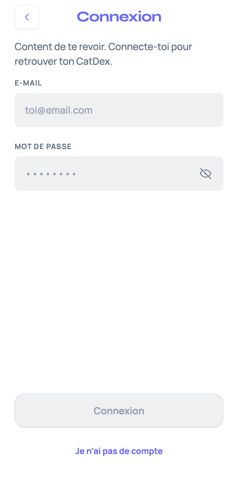
02-login — Connexion
/login
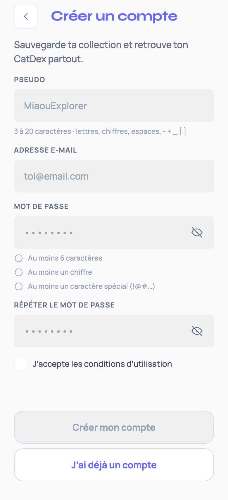
03-signup — Inscription
/signup
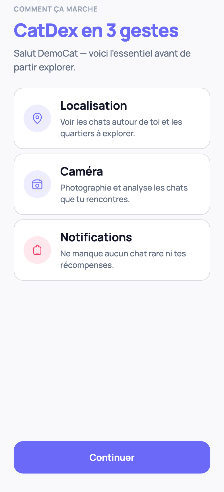
04-intro — Intro
/intro
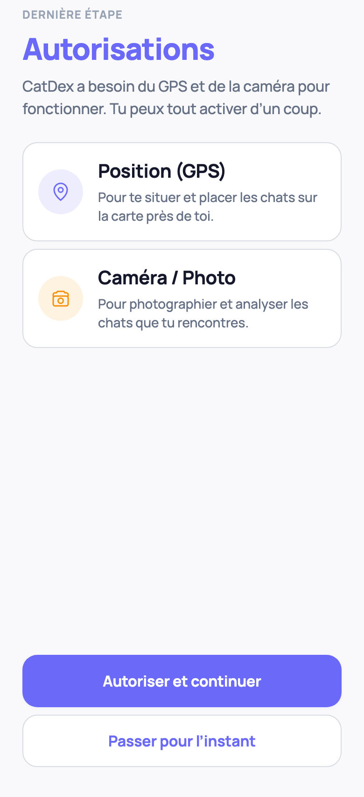
05-permissions — Permissions
/permissions
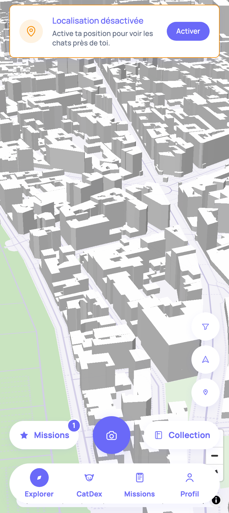
06-map — Explorer (carte)
/map
07-catdex — CatDex
/catdex
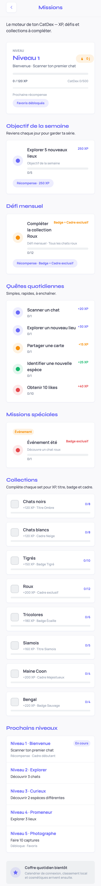
08-missions — Missions
/missions
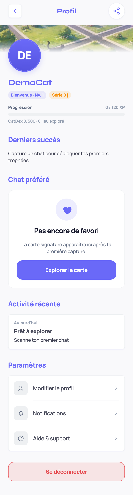
09-profile — Profil
/profile
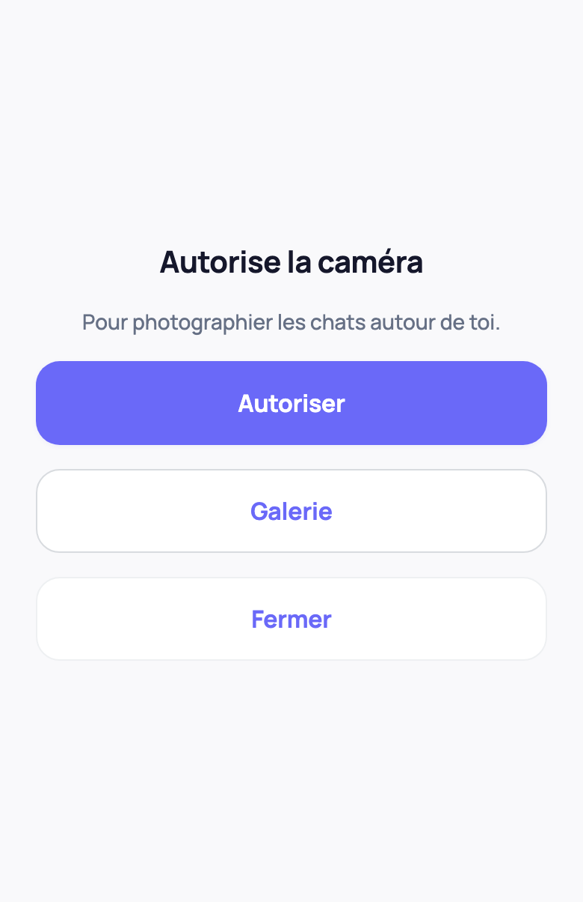
10-scanner — Scanner / Capture
/scanner
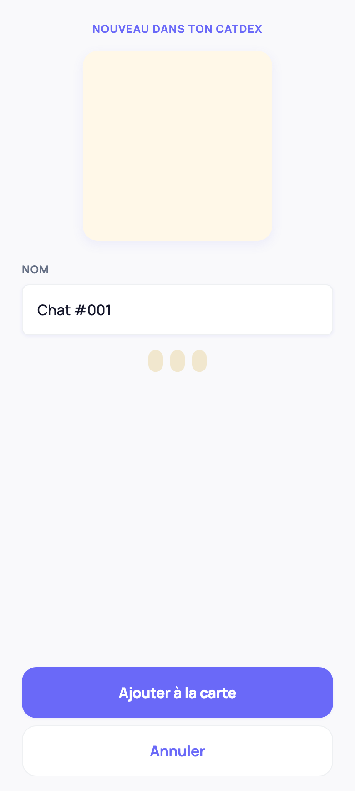
11-discovery — Discovery
/discovery
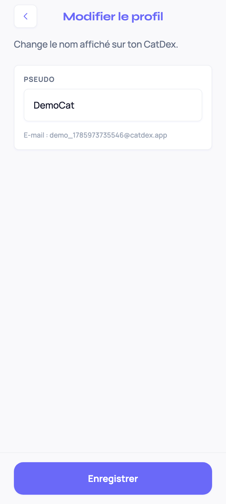
12-settings-profile — Réglages · Profil
/settings/edit-profile
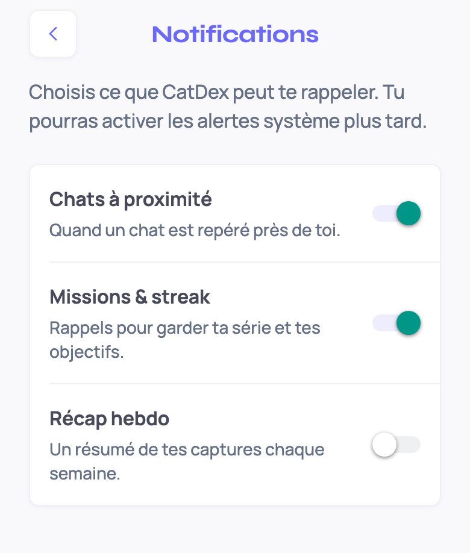
13-settings-notifications — Réglages · Notifs
/settings/notifications
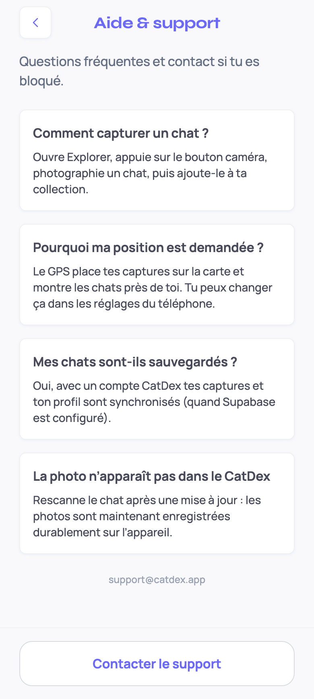
14-settings-help — Réglages · Aide
/settings/help
15-cat-detail — Fiche chat
/cat/demo_1